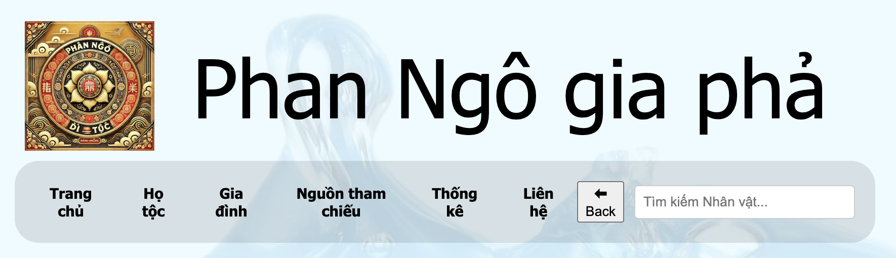
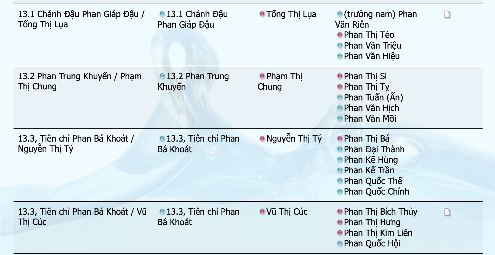
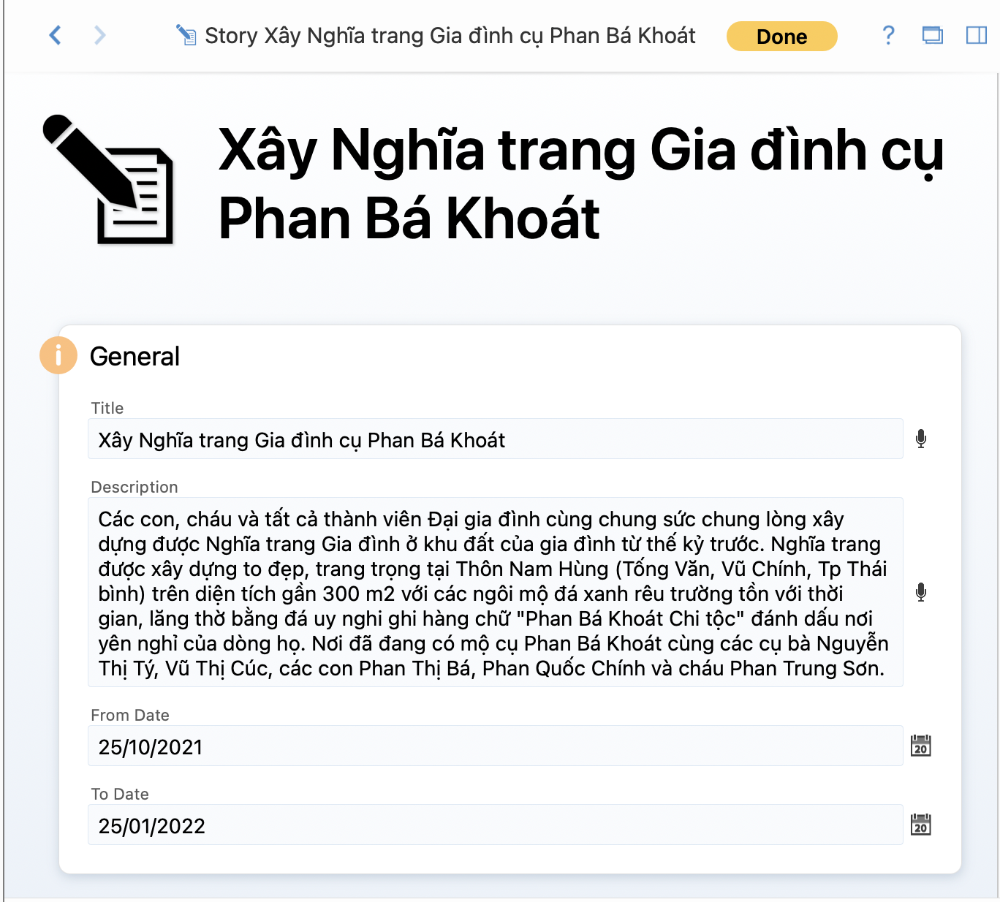
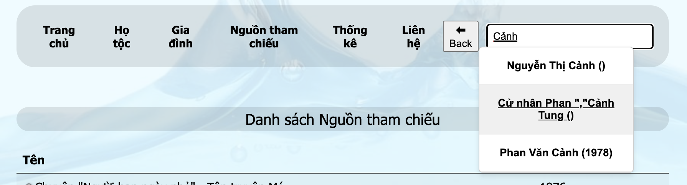
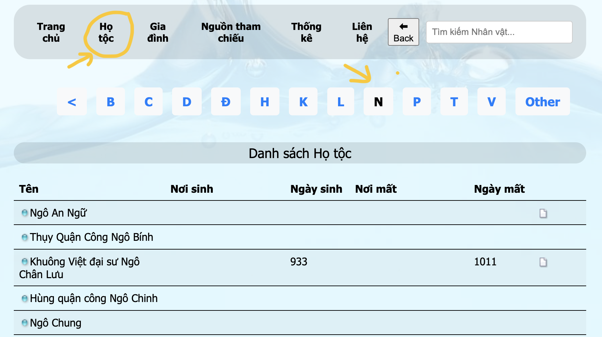
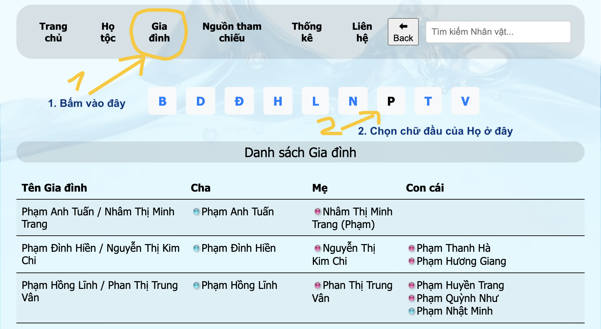
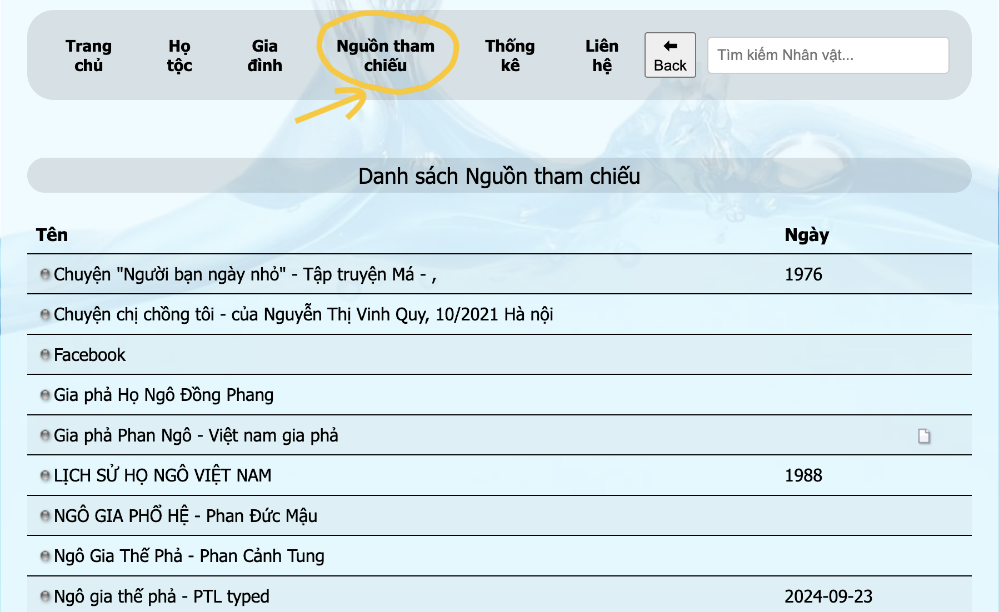
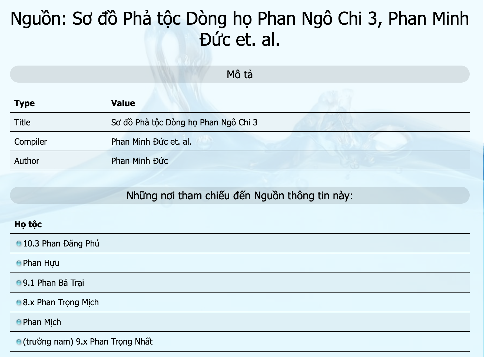
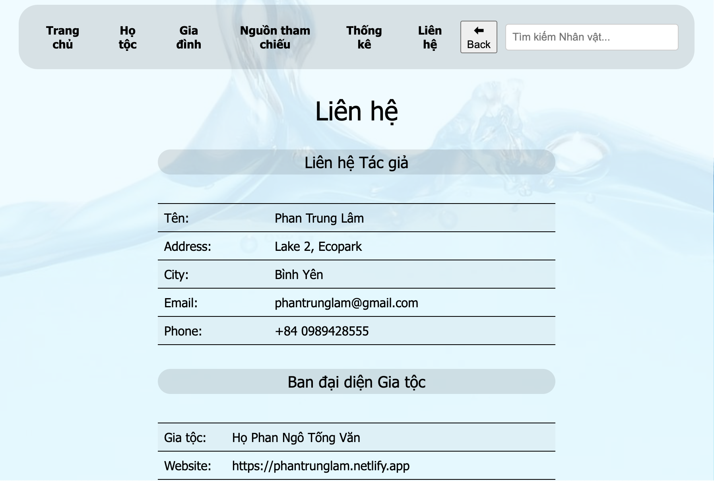

1. Giới thiệu 2. Cách tìm kiếm thông tin 2.1 Cách tìm kiếm thông tin - Hướng Dẫn Sử Dụng website - https://phantrunglam.netlify.app - Mục lục - 1. Giới thiệu - 1.1 Mục đích của trang Web - 1.2 Cách tổ chức thông tin Gia phả - 1.2.1 Các thành phần thông tin - A. Nhân vật - B. Gia đình - C. Media (Hình ảnh, video,PDF) - D. Các Sự kiện - E. Địa điểm - F. Câu Truyện - 1.2.1 Nguồn thông tin tham chiếu. - 1.3 Các tính năng chính - 1.3.2 Tra cứu Nguồn Thông tin tham chiếu - 1.3.3 Tìm kiếm theo Nhân vật - 1.3.4 Tìm kiếm theo Họ tộc - 1.3.5 Tìm kiếm theo Gia đình - 1.3.6 Xem thông tin chi tiết của Nhân vật - 1.3.7 Xem thông tin gia đình - 1.3.8 Xem các Phả đồ đã tạo sẵn - 1.3.9 Tương tác với Tác giả (góp ý và bổ sung hình ảnh, tư liệu cho Ban liên lạc Họ tộc) - 2. Cách tìm kiếm thông tin - 2.1 🔍 Tìm kiếm Nhân vật - 2.2 🔍 Tìm kiếm theo Họ - 2.3 🔍 Tìm kiếm theo Gia đình - 2.4 🔍 Xem các Nguồn tham chiếu - 3. Cách xem thông tin chi tiết - 3.1 📜 Thông tin Nhân vật - Cách di chuyển và mở rộng sơ đồ - 4. Các chức năng bổ trợ - 5. Tương tác, Góp ý - 5.1 Cách đóng góp thông tin - 6. Liên hệ hỗ trợ
Các đối tượng được lưu trữ chính trong hệ thống gia phả gồm có: Nhân vật, Gia đình, Media (Hình ảnh/Video/PDF), Ghi chú, Sự kiện, Địa điểm, Phả đồ, Nguồn tham chiếu
Nhân vật là con người có thông tin trong Gia phả. Các thông tin được lưu gồm có:
1. Họ, Tên, Các chức danh, danh xưng, tên khác
2. Ngày tháng năm sinh, nơi sinh
3. Ngày mất, nơi chôn cất (nếu đã khuất)
4. Các Ghi chú về Nhân vật như Công danh, sự nghiệp, tính cách, v.v.
4. Quê quán
5. Các đặc điểm khác về con người
6. Các sự kiện trong cuộc đời như Đi học, đi làm, cưới vợ/chồng, xây nhà, chuyển chỗ ở, công việc, nghỉ hưu... Các loại sự kiện có thể định nghĩa thêm
7. Các quan hệ gia đình:
* Người đó là con ai hoặc con trong Gia đình nào
* Người đó có vợ/chồng là ai, có những người con nào
8. Các hình ảnh, tài liệu liên quan. Ảnh đại diện

Các media có thể được lưu trong hệ thống và gắn với mọi đối tượng như Nhân vật, Gia đình, Sự kiện
Các Sự kiện là sự kiện quan trọng xảy ra với Nhân vật, Gia đình như Nhập học, Tốt nghiệp, Hôn nhân, Chỗ ở, Công việc, v.v. Mỗi Sự kiện đều có thuộc tính như:
* Loại sự kiện, Ngày tháng, Địa điểm, Ghi chú, Media gắn cùng
* Các Sự kiện có thể của Nhân vật hay của Gia đình.
Các Địa điểm là địa điểm có liên quan của Sự kiện trong Gia phả. Địa điểm gồm tên, phường, xã, huyên, thành phố, vị trí kinh độ/vị đỗ. Việc quản lý các Địa điểm giúp người lập Gia phả gắn kế địa danh vào sự kiện nhanh và chính xác.
Câu Truyện là nơi ghi lại những Sự kiện trọng đại chung của Dòng họ. Câu truyện có Chủ đề, Mô tả, Thời gian bắt đầu, kết thúc.
Mỗi câu truyện cũng được chia làm các Câu truyện nhỏ chi tiết hơn với viết gắn vào Hình ảnh, Ghi chú.




Bấm vào "Nguồn tham chiếu" trên Menu chính. 
Danh sách các Nguồn tài liệu tham chiếu là "cơ sở cho các thông tin về Nhân vật, gia đình và các thông tin khác trong Gia phả" này sẽ hiện ra bên dưới.
Chọn và Bấm vào Tên của Nguồn tham chiếu
Chi tiết của Nguồn và các thông tin tham chiếu được hiện ra 
Bên dưới là Phả đồ 🌳 (sơ đồ gia phả của nhân vật) của Nhân vật trung tâm được thể hiện.
Nhân vật trung tâm được vẽ trong Ô màu xanh sáng Bên trái là Bố Mẹ và Ông Bà của Nhân vật Bên dưới là Vợ/Chồng Bên phải là Các con - Các biểu tượng và màu sắc trên sơ đồ
Hộp màu Tím là Phụ nữ Đàn ông
Hộp màuBấm vào mỗi hộp thì sẽ chuyển người đó thành Nhân vật trung tâm. Bấm vào Hộp phía bên Trái sẽ đi dần về Tổ tiên: bố mẹ, ông bà, cụ, kỵ. Bấm về bên Phải và xem thông tin về con cháu, chắt.
• 🌐 Chọn ngôn ngữ
• 📅 Xem sự kiện gia đình theo dòng thời gian
• 📌 Sử dụng nút Back để quay lại trang trước
📧 Email: ngophangiapha@gmail.com 📞 Số điện thoại: 0989428xxx 